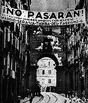
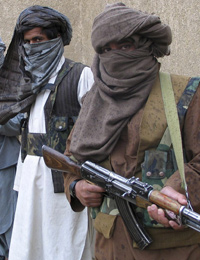
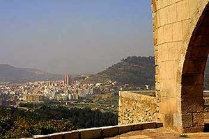
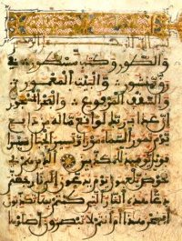
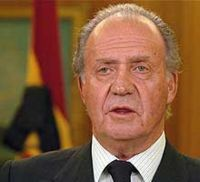

Alcora
 De: La Frikipedia, la enciclopedia extremadamente seria.
De: La Frikipedia, la enciclopedia extremadamente seria.
| De la serie ciudades del mundo:
|
| Alcora
|
| 
|

|
| (Bandera)
|
(Escudo de armas)
|
|
| Topónimo oficial
|
Alcora
|
| País
|
El de al lado de Portugal
|
| Código postal
|
666 hell rules.
|
| Superficie
|
Unos 1000 km³.
|
| Altitud
|
10000 km sobre el olimpo
|
| Distancia
|
A 1 km del cielo a dos 2km. del infierno
|
| Fundación
|
En el 1000000 a.C. por un pingüino extraviado
|
| Población
|
10000
|
| Gentilicio
|
Alcorino
|
| Alcalde
|
Cthulhu I "El Benévolo"
|
«Mira, sigues recto 20 km cruzas el puente te tiras al agua y cuando te despiertes estarás en alcora»
~ Instrucciones para llegar a Alcora.
«Mire ute, vea aquél acantilado, lo subes y al otro lado ay un bujero kon pinchos superpunzantes y mortale y bichos carnívoros, tú te tiras por allá y ya está»
~ Única forma de salir vivo de Alcora.
Alcora es una ciudad que se cree que aún existe, perteneciente al alcaide Javier Penis conocido por su corrupción generosidad con las gentes pobres. La economía se basa en follar vacas para activar cambios en la evolución fabricar azulejos a mansalva hasta ahogar a toda la población (¿y al alcaide no eh?, qué casualidad...). Esta ciudad pertenece a la Comunidad Valenciana.
La moneda oficial de la Alcora era el real maricón vellón, pero, con el cambio al euro se pasaron a los azulejos.
Pertenece a el alcalaten, es su tercera ciudad más importante (detrás de Zucaina y Xodos), es el habitad natural de especies casi extintas por la mano del hombre (porque les molían a palos) tales como: la cardanera roja, el mussol,y el mamut (de esta especia se especula que apenas quedan 10).
Alcora también es el último bastión que repele la tirania de Fabra (el único Fabra que vive en Alcora es carnicero), los largos tentáculos de la diputación de Castellón no afectan a Alcora, que sigue viviendo libre y feliz, e intentando que pueblos de los alrededores se unan a su causa, y que Chodos no sea la capital de Castellón.
Historia
Nació cuando los pastores de la zona se aburrieron de vagabundear y se asentaron para fabricar azulejos a mansalva y así lograr el objetivo de ahogar en azulejos a todo el mundo, más tarde llegaron los ladrones romanos y siguieron la tradición de azulejos solo que entonces se llamaban "azulejum" luego se fueron corriendo por que se aburrían aquí y casi todos emigraron a Francia (eso explica muchas cosas), llegaron los moros y al darse cuenta de que aquí no habían vírgenes se regresaron dando piruetas, luego, ya por fin, llegó el Cid trajo horchata y todos felices; más tarde, cuando la invasión francesa no tuvo los huevos agallas de entrar en Alcora y superar sus rígidas murallas de azulejos. Durante la guerra civil la gente ya aburrida de tirar piedras a las cabras invadieron Castellón buscando más azulejos. Durante los 60´s el caos sembró las calles de Alcora llenándose de azulejos sin vender; los 70´s no fueron mucho mejor. Tras las decenas de años bajo el mandato de Javier Peris, este, sufrió un golpe de estado NO sangriento(toooodos asfixiados) y subió al poder alguien cuya amabilidad no conocía límites, el Grande e Ilustre Cthulhu I. Javier Peris fue desterrado a Moró y a jurado volver algún día con un gran ejercito(otra vez).
Alcora esta hermandada con Xodos, Jamaica, Holanda y Hacienda.
Tribus urbanas
 Alcorino pacífico en un día cualquiera apunto de ir al bar más cercano de su casa y/o centro de trabajo forzado
 Hoy el castillo, mañana Alcora muahahaha
En Alcora abundaban los jebis, rockeros, jipíes y demás vividores, pero cuando llego el rap y el reggaetonto la gente se pervirtió y empezó a hacer cosas raras como trabajar, casarse, vestirse, ducharse, hablar con curas y demás gilipolleces.
Desde hace poco la gente de Alcora se rebela contra el imperio español y eso ha creado tribus urbanas diferentes:
- Canis: Aquella persona que va por las calles de Alcora con la música en el móvil e intentando ser gitano, cosa que demuestra su inteligencia.
- Jebi: Los sueles encontrar en el Joker o en los conciertos de la pista.
- Currante: Persona que se desloma dentro de una fábrica más horas de las que necesitas para chuparte el codo. De esta clase es el mayor porcentaje de la población.
- Pijo: Él o su padre son dueños de unas fábricas, si le pegas o vacilas quedas como dios.
- Políticos: Raza de súper
anormales hombres dedicados al mantenimiento de sus carteras (si no rebosan de billetes de 500 euros no son felices).
- Paleto: Están en vías de extinción, aunque todavía quedan con frases típicas como : "ale ñañañaña el choto se mas escapata" y "ANTONIOOOOO YEEEEE ¡¿MAS TRAIO LA PERRAS Q ME DEBÉ?!".
- Curas: Los más respetados por todos los alcorinos si alguien ve insultando a un cura, de una piedra salen miles de personas y cabras con palos y antorchas.
- Margis Son aquellos que van por la calle haciendo el tonto y comiendo barritas para el estreñimiento y bebiendo gaseosa a secas, también van tirando golpes a los coches que pasan para hacerse los guays (bueno, los gays).
- Peruanos Es un grupo de suda
kasmericanos, generalmente peruanos aunque entre ellos también hay algún/una español/a. Siempre los ves sentados en algún portal y escuchando la mierda, basura, bazofia reggaeton o a las 3 de la mañana borrachos como una Cuba.
- Frikis: Colectivo de gente extraña, que se reúne en el Casal Jove, para jugar a magics.
 Alcorán, no confundir con Alcora
Lugares famosos
- Metadona: Centro de distribución de drogas marca Ú Fan Donat.
- Cholosum: Supermercado dedicado exclusivamente a ser robado por
javier peris indeseables.
- kebab: Donde se vende comida mora, o eso dicen.
- San Vicente: Es una ermita abandonada de la mano de dios a la que peregrinan cristianos ULTRA-católicos una vez al año.
- San Cristofor: Iglesia en lo alto de una montaña desde la que los curas tiran piedras a los infieles mientras preparan una cruzada a Castellón.
- Ayuntamiento: Centro de recaudación
ilegal.
- Más y más Tienda que se cree que cada vez tiene mas clientela aunque la verdad es que cada vez tiene menos y menos.
- La Cubanita: Centro de ocio para los amantes de el heavy metal y los subarus que fue cerrado y construido encima de él (solo era una explanada de piedras). Es un circo romano para que los condenados de las escuelas antes dichas se maten entre ellos, esta cerca de las monjas porque cada dos semanas organizaban una batalla a muerte entre los de E.S.O y los de primaria.
- Casal Jove: Digamos que es un centro de ocio más pobre que una rata, con solo mesas de ping-pong destrozadas, un futbolín de
mierda buena calidad, y una mesa de billar indecente. Sin dinero para paletas de ping-pong decentes, ni para palos de billar. Sitio de reunión de frikis.
- Choloretes: Una tienda en la que se roba más de lo que se vende.
- El chino: Sitio donde se vende "comida" hecha de
gato arroz y verdura. Con una cocina con menos limpieza que un McDonald. Se dice que cuando no les queda comida trocean al cocinero y lo meten en el rollito de primavera.
- El kiosquet Kiosko donde se venden cosas generalmente de Beti Bop, Hannah Montana y de los Jonas Brothers aparte de chucherías
radiactivas sanas, pipas, material escolar... Su kioskero es el Chema alcorino (por su calva parecido).
- La Gioconda: Más conocido como la pizzería de los viejos, ya que se dice que un niño entra siendo joven, pide la pizza y luego cuando se la come sale de la pizzería para mear en los postes con la sonda mientras se afeita.
- El tubo: Lugar dodne se reunen todos los canis del pueblo para fumar porros y otras actividades cuotidianas(botellon,perreologia...) Alguno pasan a follar con su pareja o incluso a hechar la pota
Política
- PSOE: Partido Sociópata Opresor del Español, es el que comanda actualmente en el reino de Alcora.
- PP: Partido Perdedor, es la máxima oposición del anterior, en Valencia se le conoce como PTC (Partido de los Trajes a Cams).
- PLC: Partido de la Legalización del Canabbis (marihuana), es el favorito de Alcora, pero no ganó porque les daba perro votar, su lema es: "¿Eh que?..anda y que os folle un pato borracho!, ¡Pepeee!, ¡Pasa el porroooo!"
- Partido Comunista Alcorino: Siguen las idea de de Karl Marx y Groucho Marx, su lema es: "Pan para mí y nada para el pueblo".
- Partido Nacionalista Vasco: ¿Pero qué coño?, esto es de la comunidad valenciana.
- Bloc: Nadie sabe que coño es.
- Error de conexión: ¡¿Pero que...?!, ¡si esto no existe!, anda y que os den por culo.
Economía insostenible
 Me diena de odgullo y satifsfaccison prodclamar Alcora cpidal del adulejo"
Alcora es conocida por vender sus esclavos sexuales materiales de construcción de pésima buena calidad, por todo el mundo conocido, desde Honda hasta la estepa Rusa Siberiana, también vende productos de panadería como la mona de chocolate o el pastis de boniato, durante un tiempo se vendieron empanadillas de piedras asadas pero no acabo de cuajar su desagradable olor y sabor a moho. Otro de sus productos son cualquier cosa relacionada con la cerámica y ahí entran:
- Vasos.
- Jarrones.
- Consoladores.
- Jarras.
- Birras.
- Cuadros.
- Ladrillos.
- Azulejos.
Fiestas Regionales
- Fira del mussol: Fiesta autóctona en la que se celebra la muerte del tirano Juan Manuel Mussol segundo que aterrorizo a Alcora durante la segunda legislación del PP, en ella vienen
camellos mercaderes de todos los puntos de la provincia con productos únicos como el queso de San Mateo o agua de Benassal.
- Fiestas del Cristo: Son las fiestas más grandes de Alcora, en ellas se volatilizan toros en el acto con petardos tirados desde el ayuntamiento, además se celebra una especie de baile de viejos, todos los años, Tony Forcs se emborracha y acaba gritando "¡vitol a san antoni!".
- Verano: No es regional, pero es cuando más nos tocamos los huevos.
- Día de San Vaguicio: Parecido al día de San Patricio pero con más
Tetas vagancia. Está prohibido hacer cualquier acto que requiera un esfuerzo físico o mental (excepto comer, dormir, ver la televisión, fornicar y beber agua alcohol).
Periódico
Concejales amables de Alcora a la orden de Javier Peris
En Alcora el periódico se llama "Crónica" y lo dejan en los portales una vez al mes o eso (sino no lo leería ni Dios). Siempre contiene noticias (locales) absurdas que nadie lee. En la portada siempre sale el odiado alcalde. Tiene una sección de deportes que a nadie le interesa y cuatro columnas con las opiniones de los políticos que son iguales todos los meses. Cada habitante de l'Alcora ha salido por lo menos tres o cuatro veces en el periódico alcorino por lo que hoy en día no tiene ningún mérito.
Sus secciones son:
- Deportes: Aquí se insulta la mala gestión de Peris en el deporte.
- Ocio: Aquí se insulta la mala gestión de Peris en el ocio.
- Actualidad: Aquí se insulta la mala gestión de Peris en el presente.
- Publicidad: Aquí se hace publicidad y se insulta a Javier Peris.
- Caza: Aquí se caza a Javier Peris.
- Música: Aquí se insulta y canta a Javier Peris.
- Turismo: Aquí se regalan champús y se insulta a Javier Peris.
- Ladrillo: Aquí se insulta a Peris por la mala gestión del ladrillo (y un mini espacio para los televidentes para criticar a constructores "padre del barón rosa, Tony Forses, Fabra, Peris, Jesucristo, etc).
- Insultos a Peris: Único espacio en el que no se insulta a Peris.
Televisión
En Alcora el canal más visto es "Alcora TV" o una cosa parecida, su programación es ésta:
- 00:00 - 08:00:
Porno Publicidad de la mala, de esa que se hace en una tarde aburrido.
- 08:00 - 13:00: El programa favorito de los alcorinos, la hora del humor malo de Chiveta y compañia.
- 13:00 - 17:00: Insultar a Javier Peris.
- 17:00 - 21:00: Publicidad o algún televidente de ximo el cámara, especialista en pillarte rascándote el culo.
- 21:00 - 22:00: Telemierda: Anuncios como La Batamanta, Pajilleitor Plus o Quetehinches.
- 22:00 - 23:00:
Vídeos de la cámara instalada en todas las habitaciones de Javier Peris Noticias.
- 23:00 - 24:00: Algo.
- 24:00 - 26:00: Arreglar el puto reloj que tiene dos horas más.
Pedanías
Alcora posee dos colonias:
- La foia: Se pronuncia la folla y su nombre proviene de un
a prostituta río famoso, en esta especie de ciudad veranean los que no llegan ni a la playa, ni a la montaña y se quedan en la folla, también es conocido por que solo tiene una cobertura para el móvil en un banco al lado de un puente.
- Araia: Básicamente es un bar y una piscina. El 90% de su población la constituyen gatos. Solo hay gente en ese sitio en verano y cuando hacen toros. Plato típico de allí: piedras rebozadas.
Gastronomía
Alcora también es conocida por sus platos:
- Azulejos al vapor.
- Azulejos a la plancha.
- Azulejos al horno.
- Azulejos fritos.
- Azulejos al vapor.
- Azulejos rebozados.
- Ensalada de azulejos con guarnición de esmalte.
- Javier Peris al vapor (plato preferido del PP).
- Concejal al pilpil.
- Azulejos a la naranja.
- Azulejos con limón.
- Zumo de azulejos.
- Macedonia de azulejos.
- Tarta de azulejos.
- Yogur de azulejos.
Y por sus variadas bebidas (alcohólicas):
- Jugo de oveja (meao).
- Agua del Riu Sec.
- Azulejos con zumo de "maranja" (como la naranja pero echa de azulejos).
- Zumo de Peris (la bebida oficial del PP).
- Azulejos con whisky.
- Concejales con jugos gástricos.
- Sangre de pingino (pingüino autóctono de Alcora).
- Agua mineral y sana, ¿pero qué cojones?
Población
Evolución demográfica
| Año |
1990 |
1992 |
1994 |
1996 |
1998 |
2000 |
2002 |
2004 |
2005 |
2010
|
| Personas |
2 |
3 |
3,5 |
4.000.000 |
2 |
1333333 |
6666 |
1 (Javier Peris) |
ムメモャヤュユョヨラリ |
ERROR DE COJONES
|
| Azulejos |
1 |
2 |
3 |
4 |
1000 |
99999 |
21088888 |
2366668 |
シジスズセゼソゾタダ |
010101010101010101012
¡NOOO UN DOS NOOO!
|
¿Sabías que..

Típico restaurante alcorino
- ...las piedras de la región de Alcora son 4 veces más duras que las normales?
- ...la gente de Alcora se caracteriza por ser los más facilitarios?
- ...si envias un sms al 9999 poniendo el tipo de bebida que hay en los vasos de porcelana de Chiveta y pipi y lo aciertas ellos luego te invitan uno?
- ...la gente de Alcora es tan dura que en las fiestas de los toros en vez de tirar los cohetes para que exploten en el aire los dejan en tierra para que exploten en el suelo?
- ...si no subes a la "Procesión del Cristo" quedas marginado para el resto de tu vida?
- ...si no subes al "Día del rollo" no eres persona?
- ...el deporte municipal de Alcora es fumar porros?
- ...existe una discoteca donde no va ni el Tato por su gran estilo de música ya que esta en el top 10 de las discotecas seguidas de Pacha?
- ...si la "Procesión del Cristo" no se celebra se pasan todo el año corriendo y quemando a la gente diciendo que se acaba el mundo?
- ...en Alcora hay un festival jebi donde actuaron grupos como: Barricada Barón Rojo y Los Mojinos Wscocios y que a partir de las 4 de la mañana pinchan música techno?
- ...Alcora no existe realmente sino que es un producto de la imaginación de su alcalde y todos son robots creados por Javier Peris y reparados por Chiveta?
Autor(es):
- Fordus
- SPiNoZA
- Veni Vidi Vici
- Dark temptation
- Tusmuertos
- Rafael69
- Yepa
- DavoIX9
- Carroñero
- Gaañan
Frikipedia 2005-2016, Licencia
GFDL 1.2 - Extraído por FrikiLeaks